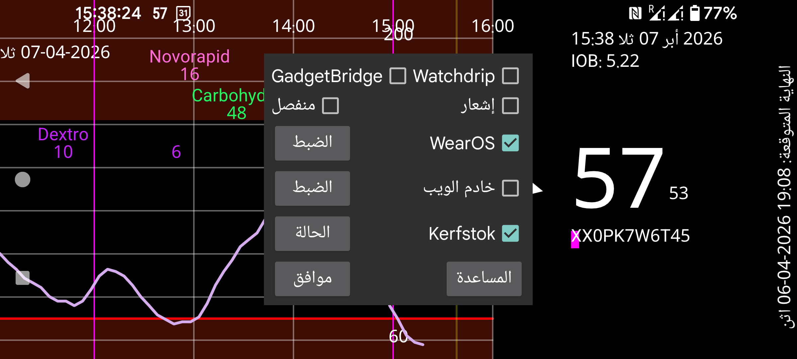

ar be de es fr hi it ja nl pl pt ru tr uk uz zh en
يوفّر Juggluco حاليًا ست طرق للحصول على قيم الغلوكوز على ساعتك.
عند تشغيل إشعار يُنشئ Android إشعارًا في كل مرة تصل فيها قيمة غلوكوز جديدة. وعلى بعض الساعات لا تُرسل الإشعارات إلى الساعة إلا عندما يُنشأ إشعار جديد، ولذلك يجب تشغيل منفصل. ولهذه الساعات يجب أيضًا تشغيل منفصل لكي تستقبل إشعارات الإنذار على الساعة.
بتشغيل هذا الخيار، يرسل Juggluco قيم الغلوكوز إلى Watchdrip+. ويقوم Watchdrip+ بإرسال واجهات ساعات تعرض قيم الغلوكوز إلى ساعات MiBand/Amazfit.
GadgetBridge يجعل من الممكن عرض معلومات الطقس على ساعات MiBand/Amazfit. وعند تشغيل خيار GadgetBridge، يرسل Juggluco قيم الغلوكوز إلى GadgetBridge على أنها معلومات طقس. وكانت لهذه الطريقة ميزة مقارنةً بـ Watchdrip لأنها أسرع بكثير، لكن عيبها أنها تعرض معلومات أقل. يضع Juggluco قيمة الغلوكوز وسهم الاتجاه في موضع الطقس. ويُعرض هذا الموضع تحت قسم الطقس في الساعة. ولم أجد أي واجهة ساعة تعرض هذا الموضع. فقط في mmol/L: يوضع الرقم قبل الفاصلة في درجة الحرارة العظمى، والرقم بعد الفاصلة في درجة الحرارة الصغرى. أما قيم mg/dL فهي كبيرة جدًا بالنسبة لدرجات الحرارة، ولذلك يوضع الرقم الأخير في درجة الحرارة الصغرى، وتوضع الأرقام السابقة له في درجة الحرارة العظمى. وهكذا تصبح القيمة 106 mg/dL: درجة الحرارة العظمى 10، ودرجة الحرارة الصغرى 6.
ويحدد اتجاه التغيّر أيقونة الطقس: فالثلج يعني هبوط الغلوكوز، والمطر يعني ارتفاعه. كما يوضع الاتجاه أيضًا في درجة الحرارة الحالية. فإذا كانت أكبر من الصفر فهذا يعني ارتفاع الغلوكوز، وإذا كانت أقل من الصفر فهذا يعني انخفاضه.
Kerfstok هو تطبيق ساعة يتيح لك إدخال الكميات (مثل جرعات الأنسولين)، لكنه يعرض أيضًا قيمة الغلوكوز الحالية. وفور وصول قيمة غلوكوز جديدة، يرسلها Juggluco إلى Kerfstok. ولذلك يعرض Kerfstok دائمًا أحدث قيمة غلوكوز. ويمكن لـ Kerfstok أيضًا تسجيل جميع الأنشطة التي تدعمها Garmin وعرض السرعة والمسافة. انظر الساعة->حالة Kerfstok->المساعدة وhttps://www.juggluco.nl/Kerfstok
يمكن للتطبيقات استقبال قيم الغلوكوز من إحدى رسائل بث الغلوكوز التي يرسلها Juggluco ثم إرسال هذه القيم إلى ساعة. فعلى سبيل المثال يمكن لـ G-Watch (TizenOS أو WearOS) استقبال قيم الغلوكوز من Glucodata Broadcast (انظر القائمة اليسرى->الإعدادات->تبادل البيانات).
يتضمن Juggluco خادم ويب xDrip/Nightscout. وهذا يجعل من الممكن استخدام تطبيقات ساعات xDrip مباشرة مع Juggluco. يعرض xDrip قيمة غلوكوز جديدة كل 5 دقائق فقط، بينما يعرض Juggluco قيمة جديدة كل دقيقة. كما يرسل Juggluco أيضًا إلى تطبيقات ساعات xDrip أحدث قيمة غلوكوز. ولا تُرسل قيم الغلوكوز إلى الساعات إلا إذا طلبها تطبيق الساعة؛ لذلك فإن عمر القيمة المعروضة يعتمد على الوقت الذي يطلب فيه التطبيق قيمة غلوكوز. فعلى سبيل المثال، تطلب واجهات الساعة وحقول البيانات على ساعات Garmin قيمة غلوكوز كل 5 دقائق فقط. وعبر xDrip كان هذا يؤدي غالبًا إلى عرض قيم غلوكوز عمرها 10 دقائق. وعند الاتصال مباشرة بـ Juggluco تعرض واجهات الساعة هذه قيماً لا يزيد عمرها عادة على 6 دقائق. وتحت Garmin، إذا لم تتمكن من استخدام Kerfstok، فستكون لديك الخيارات التالية لاستقبال قيمة غلوكوز حديثة بانتظام. يمكن أيضًا استخدام عنصر واجهة xDrip (https://apps.garmin.com/en-US/apps/73115e04-dc9f-4765-ad88-e7ae283ce995) أثناء تسجيل نشاط ما. لذلك، إذا كانت لديك يد حرة، يمكنك التبديل إلى عنصر واجهة xDrip هذا أثناء تسجيل نشاط بتطبيق Garmin الرياضي القياسي. وهناك أيضًا تطبيق رياضي xDrip يحدّث قيمة الغلوكوز بانتظام: https://apps.garmin.com/en-US/apps/aaf6533b-bca1-4365-9131-9f882f6f148c. يمكنك محاولة تشغيله في لحظة تجعله يطلب قيمة غلوكوز بعد توفرها مباشرة. أما حقول البيانات وواجهات الساعة فكانت ستكون الحل المثالي، لكن القيود التي تفرضها Garmin تجعل فائدتها محدودة.
في السابق كان بإمكانك استخدام خادم الويب في Juggluco مع واجهة ساعة من أجل Fitbit: https://glancewatchface.com . ومنذ منتصف عام 2024 لم يعد مسموحًا بالتطبيقات الخارجية على ساعات Fitbit: https://www.techradar.com/health-fitness/fitbit-watches-in-the-eu-will-lose-third-party-apps-and-watch-faces-heres-why . ويبدو أن لوائح الاتحاد الأوروبي هي التي أدت إلى هذا القرار. وربما لعب احتمال إلزام Wear OS بالسماح بمتاجر تطبيقات بديلة دورًا في ذلك: فمتعقبات اللياقة البسيطة، من دون تطبيقات خارجية، مسموح بها أيضًا، وقد نصبح مثلها. ويزعم بعض الأشخاص أنهم بعد تغيير الموقع إلى الولايات المتحدة، مع استخدام VPN، تمكنوا مرة أخرى من تثبيت تطبيقات خارجية.
لمزيد من المعلومات عن واجهة خادم الويب انظر https://www.juggluco.nl/Juggluco/webserver.html
يوجد إصدار من Juggluco مُحوَّل إلى Wear OS. وقد جرى تكييف العرض مع الشاشة الأصغر، وأُضيفت واجهة ساعة. ويمكن تثبيت واجهة الساعة هذه كواجهة Wear OS عادية، وهي تعرض بالإضافة إلى الوقت قيمة الغلوكوز الحالية المستلمة عبر Bluetooth.